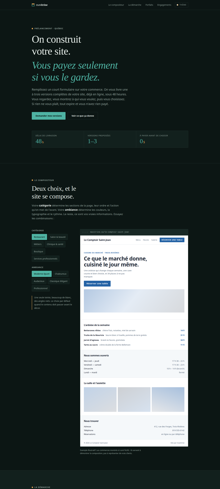
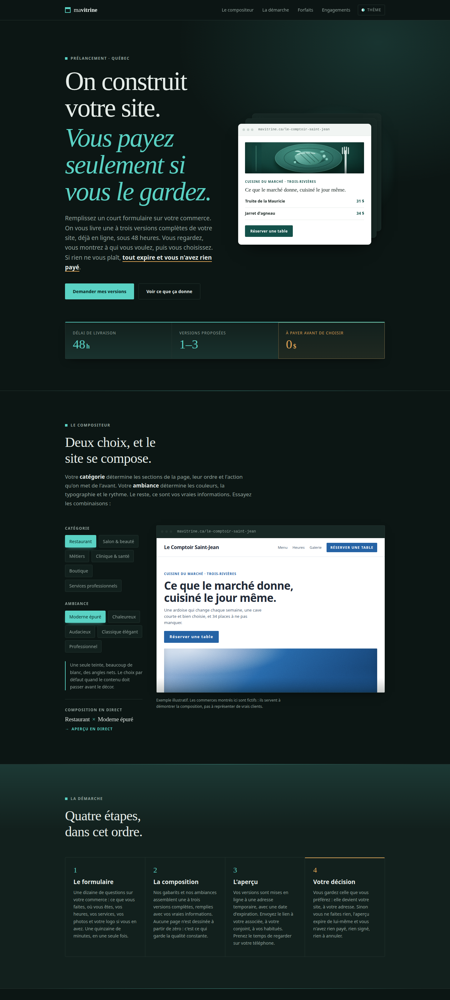
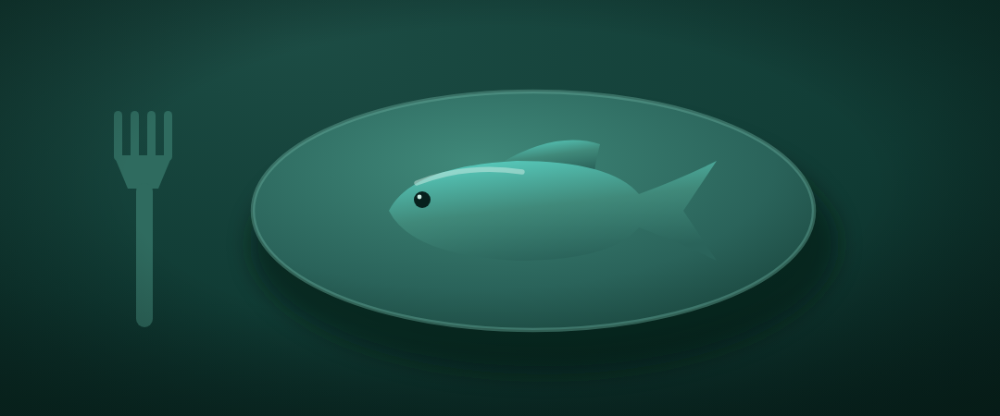
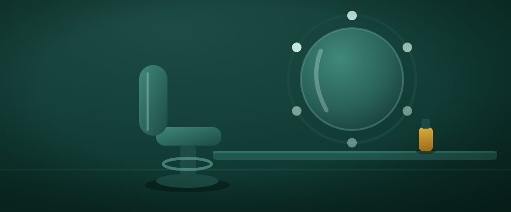
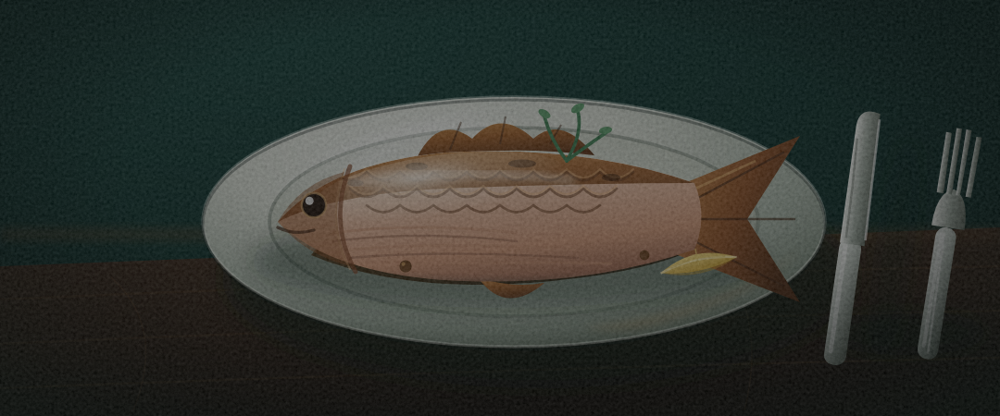

mavitrine · coulisses
Toutes les versions
L'index du « making-of » : le site en ligne, les séries d'itérations générées et notées par une boucle agentique, et les expériences du laboratoire. Chaque version est un site complet et autonome.
En ligne
Séries de versions

v0 · Original
La toute première version, conservée telle quelle.
Ouvrir →
v1 · Trois itérations
r1 · r2 (en ligne) · r3 — galerie notée + expliquée.
Voir la galerie →
v2 · La boucle corrigée
Deux révisions ; aucune n'a battu l'existant.
Voir la galerie →Laboratoire

Illustrations duotone (polies)
Cinq scènes en duotone sobre, sur la palette — la direction alignée sur la marque.
Voir la galerie →
Illustrations duotone · salon
Le style maison appliqué à une 2ᵉ catégorie — la preuve quil se généralise.
Voir la galerie →
Illustrations SVG réalistes
Cinq scènes redessinées vers le réalisme, teintées par la marque.
Voir la galerie →